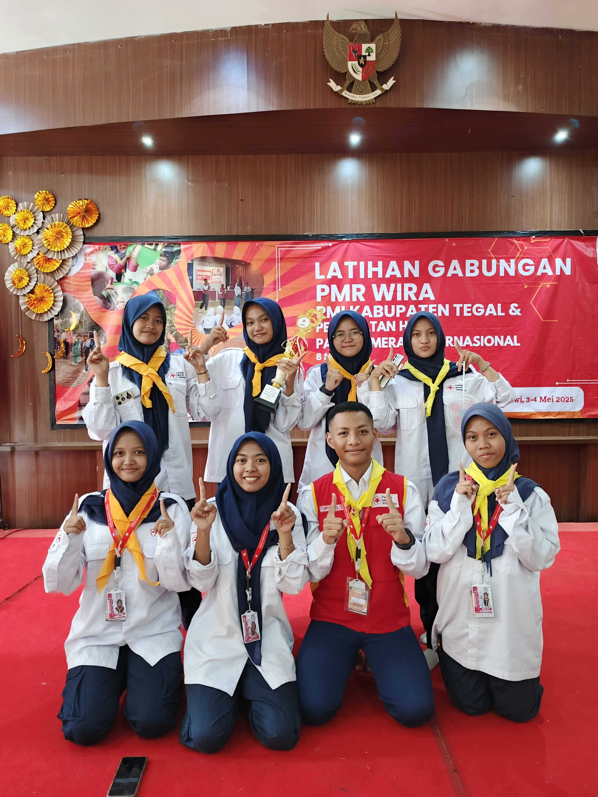
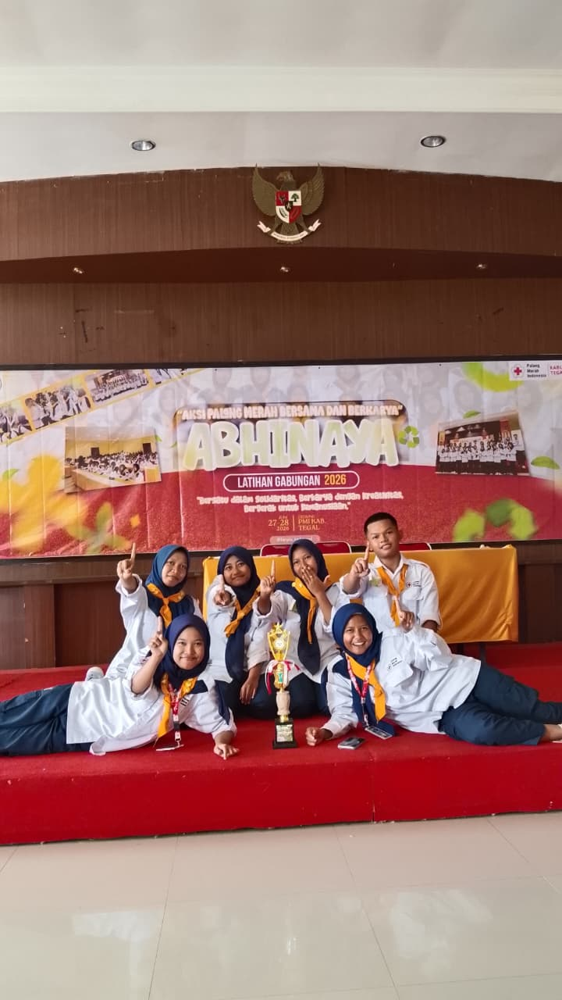

Juara Latgab
Dokumentasi prestasi PMR WIRA dalam Latgab se-Kabupaten Tegal tahun 2025.

Dokumentasi prestasi PMR WIRA dalam Latgab se-Kabupaten Tegal tahun 2025.

PMR WIRA ADB mendapatkan juara teraktif pada Latgab se-Kabupaten Tegal tahun 2026.